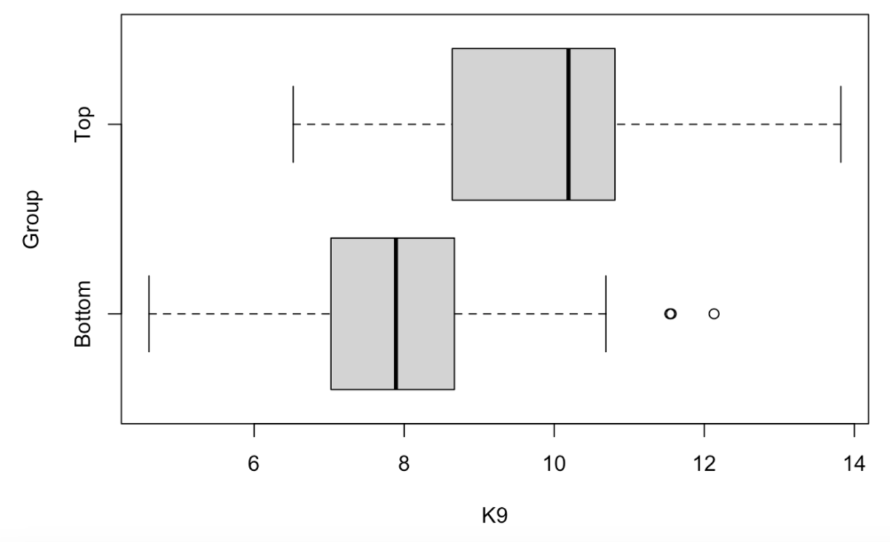

Welcome to R
1 Introduction
1.1 Learning R
I’ve been writing posts on this site for awhile and you know my style. I start with a baseball question and try to answer the question using R work and modeling and associated graphical displays. I usually provide some R code which helps some people do their own explorations. But I suspect that my posts don’t really help the interested new reader who wishes to learn R. So I thought it would be helpful to have a series of tutorial posts called “Welcome to R” introducing R and RStudio directed to the person who wants to get started.
1.2 I am not using tidyverse
That raises the obvious question – how to get started in R? I’ve taught R for many years, first for my graduate courses in statistics and more recently for undergraduate courses in data science. I started coding with S many years ago, I’ve written or cowritten three books that introduce R for different audiences, and so I have done a bit of thinking of how best to introduce R from a pedagogical perspective.
One popular general approach for learning R is based on the tidyverse suite of R packages. As described by its main developer Hadley Wickham, tidyverse is an opinionated collection of R packages designed for data science. I have used tidyverse packages, especially dplyr, in my data science teaching in the past. In fact, I have used the R for Data Science text by Wickham and Grolemund to introduce R for the first data science course at BGSU. The tidyverse collection is embraced by RStudio and many other people as a great way of learning R.
But I don’t plan on using tidyverse in this introduction to R.
Why? I found at BGSU that my data science students who learned tidyverse had gaps in their knowledge of R. After taking my tidyverse course, they didn’t know how to write a loop or write simple functions and they got frustrated when their tidyverse code didn’t work. (They didn’t have a backup plan.) They really didn’t understand vectors and matrices, although those objects are building blocks in R.
One difficulty in learning any new programming language is the syntax especially when there are many new function names to learn. Base R is hard enough, but tidyverse adds hundreds of new functions to learn. By the way, there are other tidyverse skeptics out there – for example, Norm Matloff and Jasper McChesney – and Matloff is an experienced teacher and writer of the R language.
That raises the question – is tidyverse really a good way of learning R? Honestly, I have my doubts. It would be interesting to design an experiment to assess the comparative value of tidyverse and base R functions in learning R. Statistics educators think about the best way to communicate statistical inference – why shouldn’t data science educators think about best ways of teaching coding for data science?
1.3 My Approach in Welcome to R
I plan on introducing R, focusing not on tidyverse, but rather on the exploration and graphing functions available in base R. Here are some things that I’ll discuss in this tutorial:
Installing R and RStudio. Getting familiar with the RStudio environment.
Data types and containers (such as vectors) for the data.
Importing a csv file downloaded from FanGraphs.
Working with data frames.
Summarizing and graphing character and numerical data.
Exploring relationships.
Getting started with
ggplot2graphing (by the way,ggplot2is not part of the tidyverse suite of packages)
1.4 Some other comments:
I’ll pose some questions for you to try on your own.
All of the material will be posted as Markdown files.
Last, this will be fun since I will be talking about all of the R topics in the context baseball.
1.5 The Goal
One approach to learning R is to just dive in. For example, you might get hold of our Analyzing Baseball Data with R book and jump to a particular chapter of interest like runs expectancy and try running code. That is not a good approach for most people. In this Welcome to R tutorial, I am not going to dive into some sophisticated analysis. I will assume little previous knowledge of programming and the goal is to gain familiarity with some basic R functions so you can start to do interesting baseball work.
2 Part I - Working with Vectors
2.1 Introduction
Here’s my first “Welcome to R” post. I will briefly describe the process of installing R and RStudio and the RStudio interface where you do your R work. Then I will give a description of vectors which is a basic data component in R. Using Roy Halladay data, I’ll illustrate some manipulations with vectors and some basic graphs of character and numerical data.
By the way, you find little discussion of vectors when you read introductions to tidyverse, but I think this is a good way to get introduced to computations in R.
2.2 Getting Started with R and RStudio
To get started you need to install R from CRAN and RStudio from the Rstudio download site (make sure you choose Windows or Mac depending on your computer). Once both R and RStudio are installed, then you launch R by opening up RStudio and you should see an interface similar to what is shown below.
The bottom left window is the Console window – you can type in commands like 1 + 2 and you’ll see a result. In the top left window, you can create a listing of R commands, called a R script – this is helpful if you want to save your R work. The bottom right panel is where you see graphical output and other things. What you see in the bottom right panel below is the output from knitting a Markdown file which I will introduce next.
2.3 R Markdown Files
What you currently see in the top left window is a R Markdown file. This is a convenient way of blending text and R work. When this file is run or “knitted”, then you have a nice document (by default it is html, but it could be Word or pdf) containing all of the text and R output. I don’t do much Python or Mathematica, but a R Markdown document is similar to a Python or Mathematica notebook.
All of the work and the accompanying explanation for each of my tutorial sessions will be placed in a Markdown file located on my Github Gist site. You can open up this file in RStudio and knit this (by pushing the knit button) to produce all of the output in this post.
2.4 Vectors
A good place to start learning R is by working with vectors. A vector is a collection of data of a specific type such as numeric or character. (Numeric refers to measurements like a ERA and character refers to a string such as a player’s name.) Vectors are quick to define and R has a large number of functions for summarizing and graphing vectors. I’ll illustrate creating and working with vectors with some baseball data.
Let’s look at the famous pitcher Roy Halladay who was recently inducted in the baseball Hall of Fame. From Baseball-Reference, I collected his WAR statistics from 1999 through 2013 and place them in a vector and store into a variable called WAR. (We see our first R function c() where the c indicates we are combining values into a vector.)
WAR <- c(2.6, -2.8, 3.0, 7.3, 8.1, 2.4,
5.5, 5.3, 3.5, 6.2, 6.9, 8.5,
8.8, 0.8, -1.1)I create another vector of corresponding seasons. The function seq() is helpful in creating a regularly spaced sequence of seasons from 1999 to 2013.
Season <- seq(1999, 2013)Next we create a character vector Team containing the teams that Halladay played for those 15 seasons. The function rep() will repeat an argument several times. (For example, rep(“PHI”, 4) is the same as c(“PHI”, “PHI”, “PHI”, “PHI”).)
Team <- c(rep("TOR", 11), rep("PHI", 4))2.5 Vector Indices
To illustrate different operations with vectors, we define a new vector variable GS containing the number of games started for Halladay for these 15 seasons.
GS <- c(18, 13, 16, 34, 36, 21, 19, 32,
31, 33, 32, 33, 32, 25, 13)One uses square bracket notation([]) to choose particular values of a vector. For example, the 3rd value of GS is
GS[3]
[1] 16The 2nd, 3rd, and 7th values of GS are:
GS[c(2, 3, 7)]
[1] 13 16 19A convenient way to find a subset of a vector that satisfies a logical condition is by logical operators. The following expression GS > 30 defines a logical vector of the indices of GS where Halladay started more than 30 games.
GS > 30
[1] FALSE FALSE FALSE TRUE TRUE FALSE FALSE
[8] TRUE TRUE TRUE TRUE TRUE TRUE FALSE
[15] FALSEBy using this logical condition together with the square bracket notation, we can find the seasons where Halladay started more than 30 games.
Season[GS > 30]
[1] 2002 2003 2006 2007 2008 2009 2010 2011What was the season when Halladay obtained his maximum WAR? First we identify by a logical value the WAR value which is the max (I’m illustrating the use of the R function max().)
WAR == max(WAR)
[1] FALSE FALSE FALSE FALSE FALSE FALSE FALSE
[8] FALSE FALSE FALSE FALSE FALSE TRUE FALSE
[15] FALSE(Note the use of a double equals sign to indicate logical equality.). Then we use this logical vector with the bracket notation to obtain the corresponding season. We see that Halladay’s best WAR season was 2011.
Season[WAR == max(WAR)]
[1] 20112.6 Vector Operations
One can perform vector arithmetic in R where you have two vectors and you perform element-by-element arithmetic. For example, suppose you want to compute a new measure, WAR_per_GS defined by WAR divided by GS. We can do this easily from the vectors WAR and GS:
WAR_per_GS <- WAR / GS
WAR_per_GS
[1] 0.1444 -0.2154 0.1875 0.2147 0.2250
[6] 0.1143 0.2895 0.1656 0.1129 0.1879
[11] 0.2156 0.2576 0.2750 0.0320 -0.0846There are many R functions that will take a vector as an argument and output a single value. For example, we can obtain Halladay cumulative WAR for these 15 seasons by use of the sum() function.
sum(WAR)
65Let’s compare Halladay’s cumulative WAR for his two teams. Clearly, Halladay had more total success when he played for Toronto.
sum(WAR[Team == "TOR"])
sum(WAR[Team == "PHI"])
[1] 48
[1] 17There are many similar functions like max(), min(), mean(), sd(), etc.
2.7 Graphs of Vector Data
A basic graph of the WAR values is a one-dimensional scatterplot created by the function stripchart(). The pch = 19 will choose a solid circle as the plotting point. Halladay had 8 seasons where his WAR value exceeded 5. Note his two negative WAR seasons.
stripchart(WAR, pch = 19)
By the way, another common graph of numeric data is a histogram. We create a histogram of Halladay’s WAR values by the hist() function.
hist(WAR)How did Halladay’s WAR values change over his career? We can answer this by a scatterplot with Season on the horizontal scale and WAR on the vertical. Note that Halladay’s worst seasons were in 2000 and his final two seasons.
plot(Season, WAR)What teams did Halladay play for? We first create a table of frequencies using the table() function and then construct a bar graph of the table using the barplot() function. We see that he spent most of his career with the Blue Jays.
table(Team)
Team
PHI TOR
4 11 barplot(table(Team))Did Halladay play better for Philly or Toronto? We’ll answer this question by constructing a stripchart of WAR by Team. Although most of Halladay’s success was with the Blue Jays, note the two remarkably great seasons with the Phillies.
stripchart(WAR ~ Team, pch = 19)2.8 Summary and Looking Forward
The goal of this first “Welcome to R” session was to introduce vectors for numeric or character data and illustrate a few of the many functions available indexing, summarizing, and graphing data from vectors.
If you look at the Markdown file located on my Github Gist site, you’ll see a “Things to Try on Your Own” section where I pose some questions that can be answered by working with vectors. One learns a lot by trying out things – coding is not a spectator sport.
Vectors actually are the building blocks for a main R object called a data frame. In my next post, I will illustrate reading in a csv file from a FanGraphs statistics page and illustrate some basic manipulations for data frames.
3 Part 2 - Importing Data and Data Frames
3.1 Introduction
In Part 1 of this Welcome to R series, I looked at a vector which is a key object in R. In this Part 2 post, I will introduce a data frame which is a fundamental way of storing data of different types. As motivation, I’ll describe how one can import a FanGraphs table into R and then illustrate various manipulations with the pitching statistics data frame.
3.2 Importing a FanGraphs Dataset into R
The FanGraphs website contains a lot of interesting tables. Let’s focus on a particular page that provides many statistics for the group of 2019 starting pitchers. Looking at the table, pictured below, we see an “Export Data” button on the right hand side above the table. By clicking on this, one is able to save a csv (common-separated text file) version of this table to one’s laptop. This is a common data type that is easy to import into R or other statistical programs.
Next we open up R (through RStudio). Above the top right window, we see a “Import Dataset” button that we press. (See the picture below to see the location of this button.)
We now see a menu that provides imports of different data types – we indicate that we will be reading in a Text file and using the readr package to read in the data.

After you indicate the file name (by choosing Browse and finding the csv file on your computer), you will see the following window. By default, this read_csv() function will assume that the variable names are in the first row of the dataset. Also by default the file will be saved using the name “FanGraphs_Leaderboard” since that was the name of that file. Since we will be typing in the dataset name in our work, I change the name (in the Import Options area) to the shorter “FG”. Assuming that the Data Preview screen looks reasonable (like it does here), select the Import button. The dataset will be read and stored as the data frame FG in the R workspace.
3.3 Some Data Cleaning
Before we do any work with our dataset, there are several data cleaning issues to take care of. Some of the variable names like K/9, HR/9, LOB%, GB%, and HR/FB contain special characters like / and % which will make it harder to refer to these variables. So I want to modify these variable names. A second issue is that the data for the variables LOB%, GB%, and HR/FB contain % signs and so they were imported as strings rather than numeric values. I’d like to strip the % characters from all of the values for these three variables and convert them to numeric form. By making these variables numeric, I will be able to find summaries and construct graphs designed for numeric data.
Let’s fix the variable names. The names() function returns a character vector containing the names of the variables in the data frame FG.
names(FG)
[1] "Name" "Team" "W" "L"
[5] "SV" "G" "GS" "IP"
[9] "K9" "BB9" "HR9" "BABIP"
[13] "LOB" "GB" "HR_FB" "ERA"
[17] "FIP" "xFIP" "WAR" "playerid"Using vector index operations, the following statement changes the names for the six offending variables.
names(FG)[c(9, 10, 11, 13, 14, 15)] <-
c("K9", "BB9", "HR9", "LOB", "GB", "HR_FB")Next, I want to fix those variables with percentage signs. To work with one variable of the data frame FG, I use the $ notation. So FG$LOB is a vector of LOB values for my 61 pitchers. The gsub() function will replace all occurrences of “%” with a blank character, and the as.numeric() function will convert the string variable to a numeric variable.
FG$LOB <- gsub("%", "", FG$LOB)
FG$LOB <- as.numeric(FG$LOB)I repeat this operation using a single line for the other two variables (GB and HR_FB) which contain data with % signs.
FG$GB <- as.numeric(gsub("%", "", FG$GB))
FG$HR_FB <- as.numeric(gsub("%", "", FG$HR_FB))3.4 Data Frames
The data for our 61 starting pitchers is currently stored in a data frame which is the main way of representing data in R. Basically, a data frame is a special type of matrix where rows of the data frame correspond to observations (pitchers) and columns of the data frame correspond to variables (measures such as Name, W, L, etc).
3.5 Selecting Rows and Columns
Remember the bracket notation that we used to select elements of a vector from the last lesson? We can use similar bracket notation to select rows and columns from the data frame. For example
FG[2, ]extracts the statistics for the 2nd row (pitcher). I can select the variables 2, 3, and 5 from the data frame (that is, the 2nd, 3rd, and 5th columns) by entering
FG[, c(2, 3, 5)]or using the variable names in quotes
FG[, c("Team", "W", "SV")]Note that these commands result in data frames of a smaller size. For example, the last example results in a data frame with 61 rows and 3 columns.
3.6 Extracting Variables as Vectors
The $ notation is used to extract specific variables from a data frame – the outcome will be a vector of values of the variable. If you type FG$ in the Console Window, RStudio will show you a menu with all of the variable names in the data frame. If you select W, for example, the object FG$W will give you a vector of win counts for all pitchers.
3.7 Selecting Rows and Variables to Answer Specific Questions
By use of logical variables, one can extract specific rows of a data frame using the bracket notation to answer questions of interest. We’ll illustrate with some examples. In each case I am using [] to find the row or rows of interest and then using $ to extract the variable of interest.
Which pitcher let up the most home runs per 9 innings? Here we use logical equality to find the row of the data frame where the HR9 value is the highest. Then I extract the Name variable using the $ notation.
FG[FG$HR9 == max(FG$HR9), ]$Name
[1] "Matthew Boyd"Which pitcher had the fewest walks per nine innings? Using a similar idea, I find the row of the data frame where the BB9 is the smallest and then extract the name of the pitcher in that row.
FG[FG$BB9 == min(FG$BB9), ]$Name
[1] "Hyun-Jin Ryu"Which pitchers won at least 16 games and walked less than 2 batters in 9 innings? Here I find the rows of the data frame where W > 14 and (note the & symbol) BB9 < 2, and then I extract the Name variable. We see that Verlander and Greinke satisfy these criteria.
FG[FG$W >= 16 & FG$BB9 < 2, ]$Name
[1] "Justin Verlander" "Zack Greinke" Who were the top five in strikeouts per 9 innings? Here I sort the rows of the data frame in descending order by the K9 variable (using the order() function), find the first five rows using the bracket symbol, and then extract the Name variable for these rows.
FG[order(-FG$K9), ][1:5, ]$Name
[1] "Gerrit Cole" "Max Scherzer"
[3] "Robbie Ray" "Justin Verlander"
[5] "Lucas Giolito"3.8 Creating New Variables
One can add new variables simply by defining a new data frame variable as functions of other variables. Here I define a new character variable Group that is “Top” if the WAR value is larger than 3.3, and “Bottom” otherwise. (By the way, 3.3 was the median WAR value in this group.)
FG$Group <- ifelse(FG$WAR > 3.3, "Top", "Bottom")3.9 Compare WAR Groups with Respect to BABIP
Here’s an interesting question – do the Top and Bottom groups differ with respect to W or BABIP? By use of the by() function, I find summary statistics for both variables. (The by() function has three inputs – a data frame, a grouping variable, and a measure that will be applied to each group.) From the output, we see the top pitchers tend to win 3 more games, on average, than the bottom pitchers. But the median BABIPs for the two groups are very similar, which seems to indicate that BABIP is not the best measure for distinguishing pitcher quality.
by(FG[, c("W", "BABIP")], FG$Group, summary)
FG$Group: Bottom
W BABIP
Min. : 6.00 Min. :0.2400
1st Qu.: 9.75 1st Qu.:0.2737
Median :11.00 Median :0.2925
Mean :11.12 Mean :0.2935
3rd Qu.:13.00 3rd Qu.:0.3100
Max. :17.00 Max. :0.3470
------------------------------------------
FG$Group: Top
W BABIP
Min. :10.00 Min. :0.2180
1st Qu.:11.00 1st Qu.:0.2740
Median :14.00 Median :0.2900
Mean :14.14 Mean :0.2872
3rd Qu.:16.00 3rd Qu.:0.3040
Max. :21.00 Max. :0.3260 3.10 What’s Next?
Now we have some basic understanding of data frames, on Wednesday I will provide an overview of graphical methods that one can use to look at relationships between the variables.
All of today’s work is contained in a R Markdown document on Github gist. At the end of this document, I provide a “further exploration” section where I suggest another analysis to try using some FanGraphs batting data.
4 Part 3 - Graphs of Relationships
4.1 Introduction
This is the third post in my Welcome to R series. In Welcome to R - Part 1, I focused on vectors, basic structures in R. In Welcome to R - Part 2, I imported a Fan Graphs table that listed a number of statistics for the group of 2019 starting pitchers. This Part 2 illustrated some basic manipulations with data frames. I will continue with this Fan Graphs example to illustrate some graphs available in the base package in R. We’ll see which variables among BABIP, K9, BB9, HR9 appear to explain most of the variation in the WAR values of these 62 starters.
4.2 Questions
We are working with a FanGraphs data frame of 62 starting pitchers for the 2019 season. This data frame includes (1) BABIP, batting average on balls in play, (2) K9, average number of strikeouts per nine innings, (3) BB9, average number of walks per nine innings, (4) HR9, average number of home runs allowed per nine innings, and (5) WAR, the total wins above replacement. Which variables among BABIP, K9, BB9, and HR9 are most helpful for explaining the variability in the WAR values for these 62 pitchers?
4.3 Comparing Groups
As in the previous post, I define a new variable Group which is defined to be “High” if the WAR value is larger than 3.3 or “Low” otherwise.
FG$Group <- ifelse(FG$WAR > 3.3, "Top", "Bottom")Which variables among BABIP, K9, BB9, HR9 are helpful in distinguishing the Top and Bottom WAR pitchers?
Let’s focus on the strikeout variable K9. One basic graph, created by the R function stripchart(), plots parallel one-dimensional scatterplots of K9 for the Bottom and Top WAR groups. Note that in the code I indicate that the variables K9 and Group are in the data frame FG by the data = FG argument and I jitter the plotted points by the method = "jitter" argument. Note that the Top WAR group tends to strike out more batters than the Bottom WAR group.
stripchart(K9 ~ Group,
data = FG,
method = "jitter")One can get a better idea how K9 is related to Group by plotting parallel boxplots of K9 for the two groups. We use the function boxplot() which has a similar syntax to stripchart(). By use of the horizontal = TRUE argument, the boxes are displayed in a horizontal fashion.
boxplot(K9 ~ Group,
data = FG,
horizontal = TRUE)
Each box shows the location of the median (solid vertical line) and the quartiles (vertical lines on the left and right of box) for the K9 values for a particular group. The dotted lines extend to the extreme values (LO and HI) for the K9 variable. Special outliers are plotted separately as dots. We see that the median K9 values for the Top WAR and Bottom WAR groups are respectively 10 and 8. So the Top WAR group tends to strike out 2 more batters per 9 innings than the Bottom WAR group. There are actually three outliers – these correspond to pitchers in the Low WAR group that strike out a lot of batters. (It would be interesting to identify these pitchers.)
4.4 Relating Numeric Variables
A scatterplot is a basic graph where one plots ordered pairs of two numeric variables. Since we are dealing with 5 variables (BABIP, K9, BB9, HR9, WAR), one might be interested in constructing scatterplots for all pairs among these variables. This is conveniently done by using the plot() function where the argument is the data frame with only these variables. There are 20 plots shown – note that each plot of two variables is shown twice.
plot(FG[, c("BABIP", "K9", "BB9", "HR9", "WAR")])What variable among BABIP, K9, BB9 and HR9 has the strongest relationship with WAR? To answer this question, we focus on the bottom row of scatterplots. As expected K9 has a relatively strong positive relationship with WAR, both BB9 and HR9 have negative relationships with WAR, and BABIP and WAR appear to have a weak relationship. One can quantify these relationships by computing correlations by use of the cor() function with the same argument.
cor(FG[, c("BABIP", "K9", "BB9", "HR9", "WAR")])Correlations fall between -1 and 1 and the strongest relationships correspond to correlation values close to -1 or 1. Again looking at the bottom row, K9 has the strongest relationship with WAR with a 0.7 correlation, followed by HR9 (-0.51), BB9 (-0.42), and BABIP (-0.10).
4.5 Describing the Relationship
Let’s focus on the relationship between K9 and WAR – we produce a scatterplot by the plot() function.
plot(FG$K9, FG$WAR)Since the pattern of the relationship looks pretty linear, let’s fit a line. We can use the workhorse function lm() that we use for fitting regression models. The basic syntax is y ~ x where x and y are both variables in a data frame. We store all of the calculations in the variable fit.
fit <- lm(WAR ~ K9, data = FG)We can add the least-squares fit to the scatterplot by the abline() function with argument fit. I also indicate by the argument col = "red" that I want the plotted line to be red.
plot(FG$K9, FG$WAR)
abline(fit, col = "red)4.6 Looking Deeper
What is interesting to me about this scatterplot is not the positive relationship that is obvious, but the particular points (pitchers) that deviate far from the line. One can measure a deviation by a residual which is the vertical distance of the point from the line. The lm() object stored in the variable fit has many components – one of them is a vector of residuals. We plot the K9 values against the residuals and add a horizontal line at 0.
plot(FG$BABIP, fit$residuals)
abline(a = 0, b = 0, col = "red")I’ve drawn a box around two points that correspond to large negative residuals. These two pitchers have much smaller WAR values than would be predicted by their high strikeout rates. Again, if we looked further, I’d be interested in the identities of these two pitchers.
4.7 Summary and What’s Next
The purpose of this post was to introduce popular R functions for studying relationships from the base package. Once the reader has a handle for reading in data and working with data frame, then it is pretty easy to use functions like hist(), stripchart(), boxplot(), and plot() to create these graphs.
If you want to recreate these graphs, a R Markdown file can be found on my Github Gist site.
Currently, I am planning a couple more posts in this Welcome to R series. I generally use the ggplot2 package in my plots and so it would be worthwhile to introduce this package and show how one can graph three or four variables at once. Also I’d like to talk about the data.table package which really is a nice extension of the bracket notation that we used for vectors and data frames.
5 Part 4 - The data.table Package
5.1 Will We See Baseball in 2020?
It is disappointing to see the current breakdown in negotiations between the owners and the players. But at this time it appears that there will be a shortened 2020 baseball season where the number of games and playoff structure will be determined by Major League Baseball. I look forward to exploring current baseball data, although one wonders what it means for a team to be the champion of a shortened 2020 season.
5.2 Introduction to data.table
If you have been following my Welcome to R series, we have talked in parts 1, 2, and 3 about vectors, data frames, and graphical displays for studying relationships. In this Part 4 of the Welcome to R series, I will introduce the data.table package which is an enhancement on the default data frame structure in R for handling tabular data. The R community, especially the RStudio folks, embrace the tidyverse which includes the dplyr package for manipulations with data frames. But I think data.table is a very attractive alternative to dplyr used by many data scientists. The goal here is to introduce the basic data.table syntax and illustrate it on a small baseball study. I hope this will encourage the reader to try data.table out.
5.3 Reading in Some Statcast Data
In my ABWRdata package available on Github, I have included several datasets to accompany our Analyzing Baseball Data with R book. Using the fread() function in the data.table package, I can read in a Statcast dataset directly from my Github site. This dataset contains 100K records from the 2017 season – each row corresponds to a pitch – there are a total of 91 variables measured.
By default, the fread() function will save the result as a data table.
library(data.table) sc <- fread(“https://raw.githubusercontent.com/bayesball/ABWRdata/master/data/statcast2017.txt”)
5.4 What is a data.table?
We are already familiar with a data frame in R. One can think of a data table as an enhanced version of a data frame, or maybe a data frame on steroids. A data table is also a data frame, so you can manipulate a data table in the same way as a data frame. But we’ll see that a data table has extra capabilities which makes it useful for performing data science operations quickly using a concise notation.
5.5 data.table Basic Syntax
We are already familiar with the bracket notation in a data frame – if we have a data frame, say DF, then DF[i, j] refers to rows i and variables j. In a data table DT, we have the general notation
DT[i, j, by]where i indicates how we select rows, j indicates how we choose variables, and by indicates how we divide the data table by groups.
It seems best to illustrate these different operations by examples using our Statcast data table.
5.6 Selecting Rows
These examples will look familiar to those who use the bracket notation to select rows in data frames. First, I choose the rows where the player name is “Mike Trout”, in the second example, I choose the rows corresponding to fast ball pitches, and the third example selects the pitches thrown to Mike Trout that are curve balls. Note several things: (1) I can just use the variable name in the brackets (I don’t need to use the $ notation), (2) I don’t need an extra comma inside the brackets.
sc[player_name == "Mike Trout"]
sc[pitch_type %in%
c("FC", "FF", "FO", "FS", "FT")]
sc[player_name == "Mike Trout"
& pitch_type == "CU"]5.7 Selecting Variables
The j argument lets one select one or more variables from the data table. Below I first select the pitch type, and then I select four variables. Again note that I just use the variable name, and when I want to select more than one variable, I place the variable names inside .().
sc[, pitch_type]
sc[, .(plate_x, plate_z, description, events)]5.8 Computing Summaries and Summaries by Group
Selecting rows and variables in data tables should look pretty familiar to R users. But the j argument can also be used to compute summaries. Here are a couple of examples.
First I want to compute the mean launch speed for all balls put in play (use type == “X” to select the rows in play).
sc[type == "X", mean(launch_speed)]
[1] 86.69978Okay, the mean launch speed is 86.7 mph. How does the speed vary by the number of strikes in the count? To answer this question, we now use the gp argument – we add a .(strikes) value as the 3rd argument. The output below shows a mean launch speed for 0, 1, and 2 strikes. If the third argument is .(strikes, balls), it will produce the mean launch speed for each combination of strikes and balls.
sc[type == "X", mean(launch_speed),
.(strikes)]
strikes V1
1 86.69287
2 86.13330
0 87.443945.9 Swing and Miss Study
To illustrate using data.table in a small study, consider a player hitting a line drive. First, the batter has to decide to swing. Next, the batter has to make contact with the pitch. Finally, assuming that the batter swings and doesn’t miss the pitch, he hits a line drive. How does the likelihood of each of these three steps of this process depend on the count? We are interested in ordering the counts from most likely to least likely for each of these operations.
5.10 Some Preliminaries
First I construct vectors consisting of the swing and miss situations.
swing_situations <- c("hit_into_play", "foul",
"swinging_strike",
"swinging_strike_blocked",
"missed_bunt", "hit_into_play_no_out",
"foul_bunt", "foul_tip",
"hit_into_play_score")
miss_situations <-
c("swinging_strike", "swinging_strike_blocked")I define new variables Count, swing, and miss – the last two variables are indicator functions equal to 1 or 0 if the event (swing or miss) occurs or doesn’t occur.
sc <- sc[, Count := paste(balls, strikes, sep="-")]
sc <- sc[, c("swing", "miss") :=
.(ifelse(description %in%
swing_situations, 1, 0),
ifelse(description %in%
miss_situations, 1, 0))]5.11 Swinging by Count
I compute the number of occurrences N and the fraction of swings M, and group these summaries for each possible count, and then I order the result by the fraction M in descending order. Note the reluctance of the batter to swing in early counts like 0-0 and counts where he has the advantage (like 2-0 or 3-0). It is most likely for the batter to swing in two-strike counts with the exception of a 0-2 count.
sc[, .(.N, M = round(mean(swing), 3)),
by = Count][order(- M)]
Count N M
1: 3-2 4930 0.727
2: 2-2 8195 0.640
3: 2-1 5285 0.582
4: 1-2 9536 0.580
5: 3-1 2290 0.578
6: 1-1 10328 0.536
7: 0-2 6374 0.507
8: 0-1 12832 0.468
9: 2-0 3531 0.432
10: 1-0 10095 0.421
11: 0-0 25542 0.289
12: 3-0 1062 0.1035.12 Making Contact by Count
Next, assuming that the batter has swung (want to only consider rows where swing == 1), we compute the count and fraction of misses, grouping by count. Here we order in ascending order, so the top rows correspond to the counts where the batter is least likely to miss or most likely to make contact. Generally, it appears that the batter is most likely to make contact when he is ahead in the count. The three most likely counts all have three balls. He is most likely to miss on a 0-2 count.
sc[swing == 1,
.(.N, M = round(mean(miss), 3)),
by = Count][order(M)]
Count N M
1: 3-0 109 0.083
2: 3-2 3585 0.155
3: 3-1 1324 0.162
4: 2-0 1526 0.172
5: 2-1 3076 0.203
6: 2-2 5248 0.216
7: 1-0 4250 0.227
8: 1-1 5535 0.230
9: 0-0 7384 0.232
10: 1-2 5534 0.248
11: 0-1 6002 0.248
12: 0-2 3230 0.2535.13 Hitting a Line Drive by Count
Last, assuming that the batter has swung (swing == 1) and has made contact (miss == 0), and we are interested in finding the fraction of line drives, again ordering from most likely to least likely. Here the pattern is not quite as obvious. The most likely line drive counts are 1-0 and 2-2 and the least likely line drive counts are 3-0 and 1-2.
sc[swing == 1 & miss == 0,
.(N = .N,
M = round(mean(bb_type == "line_drive",
na.rm = TRUE), 3)),
by = Count][order(-M)]
Count N M
1: 1-0 3287 0.267
2: 2-2 4115 0.266
3: 1-1 4264 0.258
4: 2-0 1264 0.257
5: 3-2 3031 0.251
6: 0-1 4515 0.250
7: 2-1 2453 0.249
8: 0-0 5673 0.248
9: 3-1 1110 0.241
10: 0-2 2412 0.237
11: 3-0 100 0.236
12: 1-2 4160 0.2355.14 Why Do I Like data table?
Many years ago, I became infatuated with the programming language APL. I appreciated the simplity and power of programming using vectors and matrices and APL had special symbols for performing these operations. One could do a relatively complex calculation using one or two lines of APL code. With all of the special symbols, it could be hard to read APL code, but I was impressed with the efficient use of code.
In a similar way, I think data.table provides a very impressive succient syntax for implementing the common data science operations on a table. Once you know the basic bracketing operations in a data frame, then it is a small step to learn the enhanced operations in the data.table package. If one is thinking about the size of the vocabulary one needs to learn, there is no contest between the data.table and dplyr packages – data.table is a clear winner. (By the way, I am disappointed that RStudio, one of the main commercial R companies, appears to ignore the data.table package in their documentation. I would think they should introduce the most useful R packages on their site.)
I encourage you to try data.table out. Here is a blog post that provides a more detailed introduction to the data.table package. It is easy to install the package from CRAN and I have posted all of the R work in this post as a Markdown file on my Github Gist site. I have explored here how the rate of swinging, contact, and line drives depends on the count. The interested reader could instead look at how the average launch speed or average launch angle depends on the situation. At the very least, I provide some easy access to some Statcast data that is fun to play with.
6 Part 5 - Comparing Two Pitchers Using ggplot2
6.1 Introduction
This is the last part of our Welcome to R series. Part 4 of this series focused on the use of the data.table package for selecting rows and columns of data frames. Part 3 illustrated the use of some base R graphics functions like hist(), plot(), etc. Here will introduce the ggplot2 package which is a system for developing high-quality graphics. It is especially nice when you want make comparisons. I’ll introduce ggplot2 within a baseball context, specifically comparing the pitches of two starting pitchers in the 2017 season.
6.2 Comparing Two 2017 Phillies Starters
If you look over the 2017 Phillies pitching statistics on Baseball-Reference, you will notice two 24-year old pitchers Aaron Nola and Nick Pivetta who had very different pitching performances this particular season. Nola had a 12-11 record with a 3.54 ERA, and Pivetta was 8-10 with a 6.02 ERA. Let’s use Statcast data to look more carefully at the two pitcher stats at the pitch level, perhaps gaining some insight why Nola was so much better than Pivetta during the 2017 season.
We are going to use the same Statcast data that we used in Part 4 of this series. Using the fread() function from the data.table package, I read the data from my Github site and save it in the data table (also data frame) sc.
library(ggplot2)
library(data.table)
sc <- fread("https://raw.githubusercontent.com/bayesball/ABWRdata/master/data/statcast2017.txt")The Statcast ids for these two pitchers are 601713 and 605400. (I found these numbers by googling the player names together with statcast.) Using data.table syntax, I create a new data.table called two_pitchers containing all of the pitches for these two pitchers. It is convenient to create a new variable Pitcher containing the pitcher names. Also I collect the following variables:
pitch_type– code for the type of pitchplate_x, plate_z– location of the pitch as it crosses the zonetype– indicates if the pitch is a ball, a strike, or in-playwoba_value– for balls put in play, this gives the woba weight for that event (0 for out, 0.9 for a single, 1.25 for a double, and so on)release_speed– speed of the pitch (in mph) when releasedpfx_x, pfx_z– the horizontal and vertical movement (in inches) of the pitch
two_pitchers <- sc[pitcher %in% c(601713, 605400)]
two_pitchers <- two_pitchers[,
Pitcher := ifelse(pitcher == 601713,
"Nick Pivetta", "Aaron Nola") ]
two_pitchers <- two_pitchers[,
.(Pitcher, pitch_type, plate_x,
plate_z, type, woba_value,
release_speed, pfx_x, pfx_z)]Let’s illustrate using ggplot2 to graph from a small dataset. To understand what pitches the two pitchers throw, I construct a frequency table of pitch_type for each pitcher.
(S <- two_pitchers[, .N, by = .(Pitcher, pitch_type)])
Pitcher pitch_type N
1: Nick Pivetta FF 209
2: Nick Pivetta SL 37
3: Aaron Nola CU 110
4: Aaron Nola FF 126
5: Aaron Nola CH 59
6: Aaron Nola FT 91
7: Nick Pivetta FT 43
8: Nick Pivetta CU 79
9: Nick Pivetta CH 156.3 Starting with ggplot2
To use ggplot2, you need to start with a data frame like S. Next, you have to assign aesthetics or roles to particular variables that you wish to graph. Suppose we want to construct a bar graph of these counts for each pitcher. The x variable (the one assigned to the horizontal axis) will be Pitcher and the y variable (the one assigned to the vertical axis) will be N. I want separate bars for each type of pitch, so I will let the fill variable (that is, the color that fills the bar) be pitch_type. The first step of a ggplot2 graph is to type
ggplot(df, aes(roles))where df is a data frame containing the data, and aes() contains all of the aesthetics or roles assigned to the different variables.
Last, we add a geometric object or geom that actually plots the bar or point or something else. Here we use the geom_bar() function that plots a bar – there are two arguments to this particular function – stat = “identity” indicates that the height of the bar should be the count (N) in the data frame and position = “dodge” says that the different pitch types should be plotted with bars that don’t overlap.
Okay, here is the syntax and corresponding graph.
ggplot(S, aes(x = Pitcher, y = N,
fill = pitch_type)) +
geom_bar(stat = "identity", position = "dodge")What is interesting is that Nola uses four pitches (changeup, curve ball, four-seamer and two-seamer) with similar frequencies. In contrast, Pivetta is primarily a four-seam pitcher with some curve balls, two-seamers, changeups and sliders.
I can choose to use different geometric objects. For example, I can choose to plot points instead of bars using the geom_point() function. I prefer bars in this particular case, but it might be good to plot points sometimes.
ggplot(S, aes(x = Pitcher, y = N,
color = pitch_type)) +
geom_point()6.4 Comparing groups
Suppose we wish to compare the release speeds of pitches of Nola and Pivetta. Now, since different pitch types have different speeds, it makes sense to compare within pitch type – for example, compare the speeds of four-seamers, compare the speeds of curve balls, etc. In the following ggplot2 code …
I want to exclude sliders since only Pivetta throws a slider.
I want to plot the
release_speedas the y-variable and thePitcheron the x-variable.I plot points that are jittered to minimize overlapping.
I want to construct different plots for each pitch type – these different subplots are called facets – and I create these individual plots by use of the
facet_wrap()function.
ggplot(two_pitchers[ pitch_type != "SL"],
aes(Pitcher, release_speed)) +
geom_jitter() +
facet_wrap(~ pitch_type)This graph is interesting with some takeaways. Pivetta throws his four-seamer (FF) faster than Nola on average. Nola has a slower curve ball than Pivetta. Also the speeds of Nola’s curve balls have smaller variation than those of Pivetta – this tells me that Nola has more control over his curve ball.
We decided to plot points by use of the geom_jitter() function. We can instead use the geom_violin() function to construct violin plots for the groups of speed values. Basically, the violin plot is a density plot and its mirror image. The reader might prefer these graphs but I admit they might look funny at first.
ggplot(two_pitchers[ pitch_type != "SL"],
aes(Pitcher, release_speed)) +
geom_violin() +
facet_wrap(~ pitch_type)6.5 Scatterplots
Different pitches vary not only by release speed but in terms of horizontal and vertical movement which are measured by the pfx_x and pfx_z variables. In the below graph, the x variable is pfx_x, the y variable is pfx_z and I am using different facets for different pitch types. Also I represent the color of the point by the Pitcher variable – note that I use color = Pitcher which is another aesthetic that is passed along in the aes() function.
ggplot(two_pitchers[ pitch_type != "SL"],
aes(pfx_x, pfx_z, color = Pitcher)) +
geom_point() +
facet_wrap(~ pitch_type)The size of the movement is different between the two pitchers. For example, look at the CU (curve ball) graph – Nola’s curve balls have a much larger horizontal movement than Pivetta’s curve ball. Pivetta’s four-seamers (look at the FF graph) tend to have more vertical movement than Nola’s.
We can also use a scatterplot with assigned x and y variables to show pitch locations. Below I graph the pitch location (x variable is plate_x, y variable is plate_z) where the color of the point is Pitcher. Note that I’ve added the plate zone to the graph. I have a function add_zone() that adds a ggplot2 layer (the black square) to the graph. (One nice feature of ggplot2 is it’s layered approach to graphing.)
library(CalledStrike)
ggplot(two_pitchers[ pitch_type != "SL"],
aes(plate_x, plate_z)) +
geom_point(aes(color = Pitcher)) +
facet_wrap(~ pitch_type) +
add_zone('black')It may be hard to distinguish the red and green points above, so I’ll try another graph to compare the pitch locations. Let’s focus on four-seamers (FF) and curve balls (CU) and I use different facets for each combination of pitch_type and Pitcher.
ggplot(two_pitchers[ pitch_type %in% c("FF", "CU")],
aes(plate_x, plate_z)) +
geom_point() +
facet_grid(pitch_type ~ Pitcher) +
add_zone('red')Remember my comment about the consistency in movement of Nola’s curve balls? Nola seems to have better location on his curve balls. Nola’s curve balls tend to be low in the zone, while Pivetta’s curve balls tend to be all over the place.
6.6 Balls put in play
Next let’s focus on pitches put into play which is indicated by type = "X" in our Statcast dataset. We’ll focus on four-seam fastballs and curveballs. For each pitcher and each pitch type, I plot the locations of the pitches where the color of the plotted point corresponds to the woba value of the pitch. In the code below, note that I set the aesthetic color to the character version of the woba_value. There are five possible values of woba_value of 0, 0.9, 1.25, 1.6, 2 corresponding respectively to out, single, double, triple and home run, and each value has a distinct color. For example, note that the two curve balls thrown by Pivetta in the middle of the plate were hit for home runs. This would suggest that the middle of the plate is not a desirable location for Pivetta’s curve ball.
ggplot(two_pitchers[ pitch_type %in%
c("FF", "CU") & type == "X"],
aes(plate_x, plate_z)) +
geom_point(aes(color =
as.character(woba_value))) +
facet_grid(pitch_type ~ Pitcher) +
add_zone('black')6.7 Takeaways
The purpose of this Welcome to R segment was to introduce ggplot2 and provide how it can be used to produce interesting plots. I especially like its ability to easily produce facets since this is a good method for making graphical comparisons. Also the default parameters of ggplot2 are attractive and they don’t require much extra modification.
Our comparison of Nola and Pivetta was interesting. Comparing the two pitchers, Nola displays a wider selection of pitch types than Pivetta. Also, comparing curve balls, Nola appears to have a high breaking pitch and he seems very consistent in his delivery, both in speed and location.
If you want to learn more about ggplot2, a good reference is the Data Visualization chapter of R for Data Science .
All of this code is available as a Markdown document. To get familiar with ggplot2, try the examples and graphically compare two other pitchers for the 2017 season that you care about.